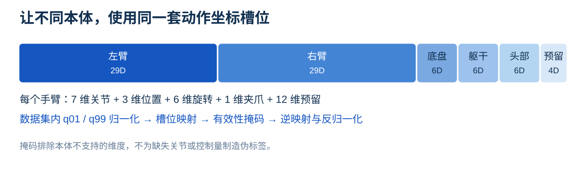

将视觉生成模型用于机器人控制
机器人策略需要遵循语言指令，并适应物体、场景、视角和任务要求的变化。世界动作模型（World Action Model，WAM）利用预训练的视觉生成模型，联合学习动作及其产生的视觉变化。将视觉生成模型用于机器人控制，一个核心问题是：动作生成能够在多大程度上直接复用视觉生成的预训练组件？
我们提出 Awomo-0.5，一个将预训练视觉生成模型用于机器人控制的世界动作建模框架。其主要模型 Awomo-0.5I 将机器人动作表示为图像块（patch），直接复用图像 Transformer 的输入和输出投影。在语言指令、当前观测和机器人状态的条件下，模型联合生成一幅未来图像和一段动作序列。
我们同时研究了基于视频的变体 Awomo-0.5V，通过可学习的动作编码与解码层，在共享 Transformer 中联合生成未来视频和动作。两个模型均在 36,800 小时的异构数据上进行预训练，数据包括真实机器人轨迹、仿真示范、第一视角人类视频和 UMI 记录。我们按原子技能类别组织数据，并通过统一动作表示和有效性掩码，支持不同机器人本体及不同动作标注条件下的联合训练。
共享预训练视觉生成模型的表示与计算。

模型测评
我们在仿真基准与 Piper 真机平台上评估 Awomo-0.5I 和 Awomo-0.5V，考察任务执行、环境变化下的鲁棒性，以及已学技能的组合泛化。两个模型分别适配各基准，并与代表性的视觉—语言—动作模型（VLA）和世界动作模型（WAM）进行比较。

仿真测评
RoboDojo 评估多样化任务需求，RoboCasa365 检验厨房任务组合，LIBERO-Plus 考察受控扰动下的鲁棒性，MolmoSpaces 关注物体交互技能，RoboTwin 2.0 测试双臂操作。我们为每个基准单独后训练策略，并按对应协议评测。
RoboDojo
RoboDojo 从泛化、精度、长时程执行、记忆和开放词汇指令遵循等方面评估机器人操作能力。评测同时报告任务进度分数和完整任务成功率：泛化维度先对标准与随机化条件取平均，再将各维度的指标分别平均，得到总体分数和总体成功率。
Awomo-0.5I 的总体分数为 35.3，成功率为 29.6%；Awomo-0.5V 分别为 28.7 和 22.9%。Awomo-0.5I 在记忆维度的完成率最高，达到 41.2%；在精度与长时程执行维度，成功率分别为 33.5% 和 26.8%。
| 模型 | 泛化 | 精度 | 长时程 | 记忆 | 开放词汇 | 总体 |
|---|---|---|---|---|---|---|
| Awomo-0.5I | 30.3 / 23.8 | 39.7 / 33.5 | 40.4 / 26.8 | 42.3 / 41.2 | 24.1 / 22.9 | 35.3 / 29.6 |
| Awomo-0.5V | 26.9 / 20.8 | 36.3 / 28.1 | 39.0 / 25.0 | 13.1 / 12.5 | 28.1 / 28.1 | 28.7 / 22.9 |

查看完整分项对比
| 模型 | 类别 | 泛化 | 精度 | 长时程 | 记忆 | 开放词汇 | 总体 |
|---|---|---|---|---|---|---|---|
| GalaxeaVLA (G0) | VLA | 4.5 / 2.8 | 8.1 / 3.8 | 12.6 / 5.6 | 3.2 / 1.9 | 0.7 / 0.7 | 5.8 / 3.0 |
| StarVLA | VLA | 3.9 / 2.3 | 9.9 / 4.3 | 14.2 / 6.5 | 3.3 / 2.4 | 0.7 / 0.6 | 6.4 / 3.2 |
| Xiaomi-Robotics-0 | VLA | 7.4 / 5.6 | 8.4 / 4.6 | 13.5 / 6.9 | 5.1 / 3.7 | 0.2 / 0.2 | 6.9 / 4.2 |
| StarVLA-OFT | VLA | 7.4 / 4.8 | 16.1 / 10.2 | 14.3 / 6.2 | 1.7 / 1.7 | 1.4 / 1.3 | 8.2 / 4.8 |
| StarVLA-GR00T | VLA | 8.0 / 5.3 | 9.6 / 4.7 | 16.2 / 7.2 | 5.6 / 4.3 | 1.9 / 1.9 | 8.3 / 4.7 |
| MolmoAct2 | VLA | 8.5 / 4.7 | 10.9 / 4.5 | 15.2 / 7.0 | 5.5 / 4.6 | 4.8 / 4.4 | 9.0 / 5.0 |
| X-VLA | VLA | 10.5 / 6.8 | 18.3 / 12.0 | 16.5 / 9.8 | 4.8 / 3.6 | 0.6 / 0.5 | 10.1 / 6.5 |
| VLAct | VLA | 9.5 / 6.3 | 20.6 / 15.2 | 20.1 / 13.7 | 0.7 / 0.6 | 2.4 / 2.3 | 10.7 / 7.6 |
| StarVLA-PI_v3 | VLA | 11.2 / 8.1 | 17.8 / 12.5 | 18.5 / 11.0 | 4.6 / 4.0 | 2.0 / 2.0 | 10.8 / 7.5 |
| InternVLA-A1.5 | VLA | 10.4 / 6.8 | 15.2 / 10.2 | 23.8 / 13.8 | 4.9 / 3.6 | 1.4 / 1.4 | 11.2 / 7.1 |
| Pi-05 | VLA | 13.4 / 8.2 | 12.4 / 5.5 | 23.5 / 14.7 | 5.9 / 4.7 | 2.0 / 1.7 | 11.4 / 6.9 |
| Spatial Forcing | VLA | 14.1 / 9.3 | 17.3 / 10.6 | 23.3 / 14.6 | 5.4 / 4.1 | 1.8 / 1.6 | 12.4 / 8.0 |
| Hy-Embodied-0.5-VLA | VLA | 11.8 / 8.4 | 13.8 / 8.0 | 25.7 / 14.9 | 13.4 / 12.1 | 0.7 / 0.6 | 13.1 / 8.8 |
| Meituan-Robotics-0 | VLA | 13.8 / 8.2 | 16.8 / 7.8 | 29.6 / 18.6 | 10.1 / 8.9 | 4.5 / 4.3 | 15.0 / 9.5 |
| Xiaomi-Robotics-1 | VLA | 23.5 / 17.0 | 26.7 / 18.8 | 38.4 / 23.7 | 7.8 / 6.6 | 3.9 / 3.6 | 20.1 / 13.9 |
| GalaxeaVLA (G0.5) | VLA | 18.5 / 12.8 | 28.3 / 20.4 | 44.1 / 32.3 | 8.6 / 7.3 | 1.7 / 1.6 | 20.2 / 14.9 |
| DM0.5 (Dexmal) | VLA | 15.8 / 10.9 | 24.8 / 16.8 | 33.7 / 19.5 | 47.7 / 47.4 | 2.4 / 2.1 | 24.9 / 19.3 |
| LDA-1B | WAM | 0.8 / 0.1 | 3.3 / 0.7 | 2.0 / 0.1 | 2.1 / 1.8 | 0.1 / 0.1 | 1.7 / 0.5 |
| Fast-WAM | WAM | 2.3 / 1.1 | 2.0 / 0.0 | 9.1 / 5.2 | 3.5 / 3.4 | 0.4 / 0.4 | 3.5 / 2.0 |
| AHA-WAM | WAM | 5.8 / 3.3 | 5.9 / 2.4 | 8.6 / 2.7 | 3.0 / 2.8 | 0.9 / 0.8 | 4.8 / 2.4 |
| GigaWorld-Policy-0 | WAM | 5.3 / 2.9 | 6.2 / 1.8 | 15.5 / 8.9 | 3.5 / 2.2 | 0.5 / 0.5 | 6.2 / 3.3 |
| X-WAM | WAM | 7.4 / 3.3 | 6.7 / 1.8 | 17.5 / 9.1 | 6.3 / 4.7 | 0.6 / 0.3 | 7.7 / 3.8 |
| OpenWAM-α | WAM | 20.7 / 14.8 | 18.4 / 9.3 | 34.9 / 25.3 | 10.4 / 9.1 | 1.4 / 1.1 | 17.2 / 11.9 |
| Awomo-0.5V | WAM | 26.9 / 20.8 | 36.3 / 28.1 | 39.0 / 25.0 | 13.1 / 12.5 | 28.1 / 28.1 | 28.7 / 22.9 |
| Awomo-0.5I | WAM | 30.3 / 23.8 | 39.7 / 33.5 | 40.4 / 26.8 | 42.3 / 41.2 | 24.1 / 22.9 | 35.3 / 29.6 |
在标准与随机化泛化条件下，Awomo-0.5I 的分数 / 成功率分别为 37.70 / 30.89% 和 22.92 / 16.78%。随机化条件下成功率的下降表明，鲁棒性仍是需要改进的方向。长时程任务的进度分数高于完整任务成功率，也说明部分任务进展并不总能转化为最终完成。
RoboCasa365
RoboCasa365 在 2,500 个环境中提供 365 项厨房任务。我们使用其多任务学习基准，评测 18 项已见原子任务、16 项已见组合任务和 16 项未见组合任务。未见组合未出现在下游训练数据中，用于检验策略能否执行新的任务组合。每项任务评测 30 次，共 1,500 次；总体成功率按全部成功次数计算，相当于以 18∶16∶16 对三类任务的成功率加权。
Awomo-0.5I 的总体成功率为 64.4%（966/1,500），Awomo-0.5V 为 62.5%（938/1,500），分别比Xiaomi-Robotics-1 的 57.4% 高出 7.0 和 5.1 个百分点。Awomo-0.5I 在未见组合上表现更好，Awomo-0.5V 在已见组合上更强。两个模型在未见任务组合上均保持了一定成功率，表明其能够泛化到下游训练任务之外的组合。
| 模型 | 已见原子任务 | 已见组合任务 | 未见组合任务 | 总体 |
|---|---|---|---|---|
| Awomo-0.5I | 86.5 | 58.8 | 45.2 | 64.4 |
| Awomo-0.5V | 85.0 | 60.4 | 39.4 | 62.5 |

查看完整分项对比
| 模型 | 类别 | 已见原子任务 | 已见组合任务 | 未见组合任务 | 总体 |
|---|---|---|---|---|---|
| Azero-Robotics-1 | VLA | 30.3 | 3.8 | 1.6 | 12.6 |
| π0 | VLA | 34.6 | 6.1 | 1.1 | 14.8 |
| π0.5 | VLA | 39.6 | 7.1 | 1.2 | 16.9 |
| GR00T N1.6 | VLA | 51.1 | 9.4 | 1.7 | 21.9 |
| GR00T N1.5 | VLA | 50.7 | 14.8 | 2.7 | 23.9 |
| WorldDreamer | VLA | 66.3 | 26.7 | 9.0 | 35.3 |
| RLDX-1 | VLA | 67.6 | 27.9 | 8.5 | 36.0 |
| PRTS | VLA | 66.3 | 30.3 | 18.8 | 39.6 |
| Phasor-m7 | VLA | 78.7 | 57.4 | 31.5 | 56.8 |
| Xiaomi-Robotics-1 | VLA | 80.2 | 57.1 | 32.1 | 57.4 |
| GigaWorld-Policy 0.1 | WAM | 44.4 | 11.8 | 2.9 | 20.7 |
| ABot-M0.5 | WAM | 75.6 | 37.7 | 3.3 | 40.3 |
| Awomo-0.5V | WAM | 85.0 | 60.4 | 39.4 | 62.5 |
| Awomo-0.5I | WAM | 86.5 | 58.8 | 45.2 | 64.4 |
LIBERO-Plus
LIBERO-Plus 在相机视角、机器人初始状态、语言指令、光照、背景纹理、传感器噪声和物体布局上设置受控变化，检验场景与指令偏离训练条件时，策略能否保持可靠执行。评测覆盖全部 10,030 个任务实例，每个实例执行一次。类别均值为各类成功率的算术平均值，对不同扰动类型赋予相同权重。
Awomo-0.5I 的类别均值达到 95.9%，Awomo-0.5V 达到 92.5%，均高于Qwen-RobotManip-Context 的 92.0%。两个模型在背景、传感器噪声、相机和光照扰动下的成功率均超过 97%。语言指令、物体布局和机器人初始状态是 Awomo-0.5V 相对薄弱的类别。
| 模型 | 相机视角 | 初始状态 | 语言指令 | 光照 | 背景 | 传感器噪声 | 物体布局 | 类别均值 |
|---|---|---|---|---|---|---|---|---|
| Awomo-0.5I | 98.6 | 89.9 | 94.3 | 99.5 | 98.8 | 99.1 | 91.0 | 95.9 |
| Awomo-0.5V | 98.7 | 84.0 | 87.9 | 97.4 | 98.5 | 97.8 | 83.3 | 92.5 |

查看完整分项对比
| 模型 | 类别 | 相机视角 | 初始状态 | 语言指令 | 光照 | 背景 | 传感器噪声 | 物体布局 | 类别均值 |
|---|---|---|---|---|---|---|---|---|---|
| GAM | VLA | 83.1 | 70.0 | 84.8 | 97.2 | 94.3 | 95.3 | 79.1 | 86.3 |
| π0.5 | VLA | 75.8 | 79.4 | 83.3 | 95.5 | 95.0 | 89.6 | 87.0 | 86.5 |
| Multi-view VLA | VLA | 89.6 | 60.1 | 86.9 | 98.0 | 95.7 | 97.2 | 78.2 | 86.5 |
| 3DVLA | VLA | 75.6 | 77.4 | 88.6 | 97.4 | 97.7 | 85.3 | 86.6 | 86.9 |
| ERVLA | VLA | 77.2 | 75.3 | 87.1 | 95.1 | 94.7 | 92.3 | 86.4 | 86.9 |
| RLDX-1 | VLA | 75.0 | 91.8 | 92.2 | 97.1 | 95.5 | 80.3 | 80.7 | 87.5 |
| Reflective VLA | VLA | 95.7 | 72.9 | 92.2 | 92.1 | 92.7 | 95.4 | 73.0 | 87.7 |
| ACoT-VLA | VLA | 96.6 | 70.4 | 79.7 | 95.1 | 97.1 | 95.9 | 85.0 | 88.5 |
| Anchor-Align VLA | VLA | 96.3 | 59.1 | 87.2 | 99.0 | 99.6 | 96.9 | 97.4 | 90.8 |
| QuoVLA | VLA | 98.4 | 73.5 | 83.7 | 96.3 | 99.0 | 94.8 | 90.4 | 90.9 |
| CAC-VLA | VLA | 94.8 | 72.5 | 86.6 | 98.9 | 98.6 | 98.3 | 87.6 | 91.0 |
| Hermite-VLAReg | VLA | 89.2 | 85.4 | 87.3 | 97.7 | 96.7 | 93.8 | 89.9 | 91.4 |
| Qwen-RobotManip-Context | VLA | 89.9 | 83.9 | 86.5 | 98.6 | 99.9 | 97.9 | 87.5 | 92.0 |
| Fast-WAM | WAM | 16.4 | 44.5 | 68.9 | 78.2 | 53.7 | 37.7 | 60.7 | 51.4 |
| Cosmos-Policy | WAM | 75.8 | 63.3 | 81.7 | 96.5 | 88.9 | 92.7 | 82.2 | 83.0 |
| ImageWAM | WAM | 80.8 | 50.3 | 91.4 | 98.1 | 85.5 | 93.8 | 80.5 | 82.9 |
| ABot-M0.5 | WAM | 70.5 | 87.4 | 88.6 | 94.0 | 89.7 | 75.5 | 85.2 | 84.4 |
| Being-H0.7 | WAM | 82.0 | 59.0 | 82.8 | 97.8 | 90.0 | 93.5 | 88.5 | 84.8 |
| Awomo-0.5V | WAM | 98.7 | 84.0 | 87.9 | 97.4 | 98.5 | 97.8 | 83.3 | 92.5 |
| Awomo-0.5I | WAM | 98.6 | 89.9 | 94.3 | 99.5 | 98.8 | 99.1 | 91.0 | 95.9 |
这些结果来自多次 SFT 实验中选定的检查点，并非多个训练随机种子的平均值。类别均值也不同于合并全部 10,030 次执行计算的成功率，后者会按各类实例数量加权。
MolmoSpaces
MolmoSpaces 提供多样化的机器人导航与操作仿真环境。我们评测打开、关闭、抓取和抓取放置四类操作，覆盖关节物体交互与物体搬运。各类成功率按成功次数除以评测次数计算，综合指标为四类成功率的等权平均值。
Awomo-0.5V 的综合成功率为 73.4%，Awomo-0.5I 为 73.0%，均高于PrimeR0 的 60.3%。两个模型在关闭和抓取任务上均表现较好，并在不同操作上呈现互补性：Awomo-0.5V 在打开任务上高出 13.1 个百分点，而 Awomo-0.5I 在抓取放置任务上高出 12.1 个百分点。
| 模型 | 抓取 | 抓取放置 | 打开 | 关闭 | 四类均值 |
|---|---|---|---|---|---|
| Awomo-0.5I | 84.5 | 71.0 | 49.3 | 87.2 | 73.0 |
| Awomo-0.5V | 86.4 | 58.9 | 62.4 | 86.0 | 73.4 |

查看完整分项对比
| 模型 | 类别 | 抓取 | 抓取放置 | 打开 | 关闭 | 四类均值 |
|---|---|---|---|---|---|---|
| π0-FAST DROID | VLA | 22.0 | 10.9 | 11.1 | 38.6 | 20.7 |
| LAP-VLA | VLA | 24.9 | 6.6 | 11.4 | 45.9 | 22.2 |
| π0 DROID | VLA | 16.2 | 12.5 | 11.0 | 53.1 | 23.2 |
| π0.5 DROID | VLA | 36.4 | 13.6 | 22.7 | 65.1 | 34.5 |
| MolmoAct2 DROID | VLA | 48.3 | 23.3 | 11.7 | 71.3 | 38.6 |
| PRTS-Droid | VLA | 53.8 | 27.7 | 12.0 | 76.3 | 42.4 |
| WALL-OSS-0.5 | VLA | 73.8 | 46.0 | 16.8 | 78.5 | 53.8 |
| PrimeR0 | VLA | 77.5 | 54.6 | 27.8 | 81.3 | 60.3 |
| Psi-R2 | WAM | 73.1 | 41.5 | 9.0 | 62.2 | 46.4 |
| Vana-Policy | WAM | 59.7 | 36.1 | 35.1 | 60.8 | 47.9 |
| Cosmos3-Nano-Policy | WAM | 65.5 | 35.2 | 32.0 | 79.1 | 53.0 |
| Awomo-0.5V | WAM | 86.4 | 58.9 | 62.4 | 86.0 | 73.4 |
| Awomo-0.5I | WAM | 84.5 | 71.0 | 49.3 | 87.2 | 73.0 |
Awomo-0.5V 的评测包含 1,000 次打开、915 次关闭、1,000 次抓取和 1,000 次抓取放置，共 3,915 次执行。综合指标对操作类别等权平均，不按各类执行次数加权。
RoboTwin 2.0
RoboTwin 2.0 在干净场景和随机化场景中评测 50 项双臂操作任务。域随机化改变杂物、光照、背景、桌面高度和语言指令，检验策略对观测与任务上下文变化的鲁棒性。我们分别报告完整数据训练（Full）和仅使用干净示范训练（Clean-to-Random，C2R）的结果，两种协议均在干净与随机化场景中评测。
完整数据训练（Full）
同时使用干净和随机化示范训练后，Awomo-0.5I 在两种场景中的成功率分别为 96.0% 和 96.2%，平均为 96.1%，比MotuBrain 的 95.9% 高出 0.2 个百分点。两种场景之间仅相差 0.2 个百分点，说明模型在所评测的随机化条件下保持了接近的总体表现。
| 模型 | 干净场景 | 随机化场景 | 均值 |
|---|---|---|---|
| Awomo-0.5I | 96.0 | 96.2 | 96.1 |
| Awomo-0.5V | 92.8 | 91.6 | 92.2 |

查看完整分项对比
| 模型 | 类别 | 干净场景 | 随机化场景 | 均值 |
|---|---|---|---|---|
| π0 | VLA | 65.9 | 58.4 | 62.2 |
| X-VLA | VLA | 72.8 | 72.8 | 72.8 |
| π0.5 | VLA | 82.7 | 76.8 | 79.8 |
| LingBot-VLA | VLA | 88.6 | 86.7 | 87.6 |
| ZR-0 | VLA | 88.7 | 88.0 | 88.3 |
| HoloBrain-0-QW | VLA | 91.9 | 92.3 | 92.1 |
| G0.5 | VLA | 93.7 | 92.8 | 93.3 |
| Qwen-RobotManip | VLA | 93.7 | 94.0 | 93.9 |
| X-WAM | WAM | 89.8 | 90.7 | 90.3 |
| LaWAM | WAM | 92.6 | 89.8 | 91.2 |
| LingBot-VA | WAM | 92.9 | 91.6 | 92.2 |
| Faster-WAM | WAM | 92.8 | 92.3 | 92.6 |
| SelfWAM | WAM | 92.2 | 93.1 | 92.6 |
| MECo-WAM | WAM | 93.3 | 92.0 | 92.6 |
| AIM | WAM | 94.0 | 92.1 | 93.1 |
| ImageWAM | WAM | 93.2 | 93.6 | 93.4 |
| LingBot-VA 2.0 | WAM | 93.8 | 93.4 | 93.6 |
| Next Forcing | WAM | 94.1 | 93.5 | 93.8 |
| ABot-M0.5 | WAM | 94.0 | 94.2 | 94.1 |
| MotuBrain | WAM | 95.8 | 96.1 | 95.9 |
| Awomo-0.5V | WAM | 92.8 | 91.6 | 92.2 |
| Awomo-0.5I | WAM | 96.0 | 96.2 | 96.1 |
仅使用干净示范训练（C2R）
在 C2R 协议下，Awomo-0.5I 在干净场景中的成功率为 86.8%，在随机化场景中为 76.0%，均值为 81.4%；Awomo-0.5V 的均值为 74.7%。Awomo-0.5I 在随机化场景中的成功率比干净场景低 10.8 个百分点，这组结果反映了仅使用干净示范训练后的泛化表现。
| 模型 | 干净场景 | 随机化场景 | 均值 |
|---|---|---|---|
| Awomo-0.5I | 86.8 | 76.0 | 81.4 |
| Awomo-0.5V | 84.6 | 64.8 | 74.7 |

查看完整分项对比
| 模型 | 类别 | 干净场景 | 随机化场景 | 均值 |
|---|---|---|---|---|
| starVLA | VLA | 46.5 | 3.2 | 24.8 |
| GalaxeaVLA | VLA | 62.7 | 12.7 | 37.7 |
| Xiaomi Robotics-0 | VLA | 62.9 | 18.2 | 40.6 |
| EventVLA | VLA | 65.6 | 15.7 | 40.7 |
| X-VLA | VLA | 68.0 | 20.9 | 44.5 |
| π0.5 | VLA | 70.7 | 46.0 | 58.4 |
| AHA-WAM | WAM | 64.3 | 3.2 | 33.8 |
| FastWAM | WAM | 77.8 | 1.9 | 39.9 |
| Abot-M0 | WAM | 57.4 | 30.4 | 43.9 |
| X-WAM | WAM | 70.0 | 25.8 | 47.9 |
| Spatial Forcing | WAM | 77.2 | 26.7 | 52.0 |
| OLA-Geo | WAM | 83.0 | 33.6 | 58.3 |
| 4D-WAM | WAM | 81.5 | 41.8 | 61.7 |
| GigaBrain-0.7 | WAM | 66.8 | 67.9 | 67.4 |
| OLA-Sem | WAM | 75.1 | 67.6 | 71.3 |
| Awomo-0.5V | WAM | 84.6 | 64.8 | 74.7 |
| Awomo-0.5I | WAM | 86.8 | 76.0 | 81.4 |
真机测评
我们在 Piper 平台上评估两个模型，并与 π0.5 和 DreamZero 比较，检验已见条件下的原子操作、向未见条件的迁移，以及已学原子技能的组合泛化。
单目标示范与组合评测
训练集包含 3,921 条单目标示范，覆盖抓取、放置、相对放置、关抽屉和开抽屉五类任务。Piper 后训练仅使用原子任务示范，组合指令保留用于评测。评测共 69 项，包括 44 项已见原子任务、19 项未见原子条件和 6 项组合任务。

已见与未见条件下的表现
在相同的 Piper 示范上进行适配后，Awomo-0.5I 的总体成功率为 79.7%（55/69），Awomo-0.5V 为 69.6%（48/69）；π0.5 和 DreamZero 分别为 65.2% 和 52.2%。两个模型在总体表现与组合任务上均优于本次评测的基线。
| 模型 | 已见原子任务 | 未见原子条件 | 组合任务 | 总体 |
|---|---|---|---|---|
| π0.5 | 77.3（34/44） | 57.9（11/19） | 0.0（0/6） | 65.2（45/69） |
| DreamZero* | 63.6（28/44） | 42.1（8/19） | 0.0（0/6） | 52.2（36/69） |
| Awomo-0.5V | 81.8（36/44） | 52.6（10/19） | 33.3（2/6） | 69.6（48/69） |
| Awomo-0.5I | 88.6（39/44） | 57.9（11/19） | 83.3（5/6） | 79.7（55/69） |
在已见条件下，Awomo-0.5I 和 Awomo-0.5V 的成功率分别为 88.6% 和 81.8%。相较 π0.5，提升来自相对放置任务：两个模型分别达到 75.0% 和 60.0%，π0.5 为 50.0%。这类任务需要识别目标物体与参照物，并满足指令指定的空间关系。
在未见原子条件下，Awomo-0.5I 达到 57.9%，与 π0.5 相同。它完成了全部未见颜色入盘、黑色篮筐放置和第一层抽屉关闭任务，但所有参评模型均未完成留出的“左侧放置”和第三层抽屉打开条件。这表明，已学操作能够迁移到部分新物体和容器，对未见空间关系及动作与抽屉层级组合的迁移仍有限。
从单目标操作到组合指令
组合评测包含两类任务：对两个指定物体重复执行放置技能，以及先将一个物体放入盘中、再把另一个物体叠在其上。后一类任务要求按指定顺序整合放置与相对放置技能，前一步产生的场景状态是后一步的执行条件。
Awomo-0.5I 完成 5/6 项组合任务，包括全部 4 项双物体入盘和 2 项有序放置堆叠中的 1 项；Awomo-0.5V 完成 2/6，两个基线均未完成组合任务。每条组合指令评测一次。这些结果展示了仅使用单目标示范训练后，模型在同一条指令中复用与组合已学技能的能力。

实验设置与基线说明
模型接收前视、左腕和右腕三路 RGB 图像，以及由十二个关节位置和两个夹爪开度组成的 14 维状态。所有策略使用相同的 3,921 条 Piper 示范进行适配，并采用相同的指令、参考场景、执行预算和成功判据。原子任务限时 60 秒，组合任务限时 120 秒，成功与否按任务目标人工判定。
* DreamZero 基线采用 DreamZero 架构和 Wan2.2-TI2V-5B 视频预训练初始化，未使用经过机器人预训练的 DreamZero 策略检查点。π0.5 从官方检查点初始化，两个 Awomo 模型从各自的具身预训练检查点初始化。因此，这组实验比较的是统一下游协议下完整适配策略的表现，未单独隔离架构、预训练数据与初始化的影响。
模型架构与训练目标
Awomo-0.5 将机器人控制建模为视觉变量与动作变量上的条件流生成问题。条件上下文包含具身提示词、当前相机观测和机器人状态；生成目标包括未来视觉内容的潜变量，以及长度为 H、每步 80 维的动作序列（action chunk，下文称动作块）。两者均从噪声初始化，由同一个 Transformer 迭代去噪。机器人状态始终作为条件输入，不作为预测目标。
两个变体使用相同类型的输入：文本提示、相机观测、机器人状态，以及在同一流时间 t 加噪的视觉和动作目标。各自的编码器将输入转换为 token，经预训练 Transformer 主干处理后，输出视觉变量和动作变量的流速度。二者的主要区别在于视觉生成主干、文本编码器，以及动作进入和离开主干的方式。

Awomo-0.5I：基于图像的动作生成
Awomo-0.5I 使用 FLUX.2-klein-base-4B 图像 Transformer 的预训练权重初始化。冻结的 FLUX.2 自编码器将当前帧编码为无噪声参考图像，将动作块末尾对应的帧编码为未来图像目标；两者的潜变量均展开为 128 通道的图像块。每步 80 维动作补零至相同宽度，作为一个额外的图像块。由参考图像、带噪未来图像和带噪动作组成的序列，共享 Transformer 的输入投影和输出投影。
Qwen3-VL-4B-Instruct 依次读取当前观测和文本提示，将第 9、18、27 层的隐藏状态拼接为 7,680 维上下文 token，最多保留 128 个文本位置。该编码器在预训练阶段冻结，仅在具有子任务目标的基准微调中解冻。当前机器人状态经线性层映射为一个上下文 token，插入有效文本 token 之后。
主干包含 5 个双流块和 20 个单流块，隐藏维度为 3,072。双流块中的上下文 token 与图像、动作 token 分别使用各自的时间步调制和前馈网络权重，并通过联合注意力交互；单流块则用同一套权重处理所有 token。每个动作位置输出的前 80 个通道给出动作变量的流速度，因此无需单独的动作专家，预训练图像主干即可直接处理动作。未来图像的潜变量由冻结的自编码器解码。
Awomo-0.5V：基于视频的动作生成
Awomo-0.5V 使用 Wan2.2-TI2V-5B 视频 Transformer 的预训练权重初始化。冻结的 Wan2.2 视频自编码器将观测视频编码为潜变量，再通过主干的三维卷积映射为 token。可学习的动作编码器将带噪动作及其扩散时间步映射到 Transformer 的 token 空间，独立的 MLP 对机器人状态进行编码。文本提示由冻结的 UMT5-XXL 编码，不加入自注意力序列。
主干的每个模块依次执行时间步调制、视频与状态及动作 token 之间的自注意力、对文本特征的交叉注意力，以及前馈计算。视频输出头预测视频潜变量的流速度，专用 MLP 解码器预测动作变量的流速度。初始观测帧保持无噪声，作为上下文且不计入视觉损失；模型联合去噪后续视频帧及其对应动作。
Awomo-0.5V 按动作块组织时间序列。每个动作块包含一段未来视频潜变量、24 步动作和该块起点的机器人状态，预训练时每个样本使用 4 个动作块。Awomo-0.5I 根据数据集采用单块或多块样本：单块样本以当前帧为条件，多块样本以各块起点之前的无噪声图像为条件。
注意力掩码（Attention Masks）
注意力掩码在保留无噪声视觉历史的同时，防止预测块获取未来信息。下图展示了两个模型的注意力结构。

Awomo-0.5I 的注意力结构
在单个动作块中，条件 token（文本、状态和无噪声参考图像）仅关注条件 token，带噪图像和动作 token 可以关注所有有效 token。对于包含多个动作块的样本，每个块的带噪图像和动作 token 可以关注文本、该块的状态、截至该块起点的无噪声图像，以及同一块内的带噪 token；不同块的带噪 token 和状态之间不建立注意力连接。
Awomo-0.5V 的分块因果注意力
自注意力在块之间采用因果结构：无噪声视频 token 仅关注截至当前块的无噪声视频，每个状态 token 仅关注自身。每个块的带噪视频和动作 token 可以关注无噪声历史，以及同一块内的带噪视频、动作和状态。所有非文本 token 均通过交叉注意力接收文本信息。
这些掩码使两个模型能够在教师强制（teacher forcing）条件下学习多块序列，同时保留推理时所需的依赖结构。
流匹配（Flow Matching）
预训练同时对视觉生成和动作生成使用流匹配目标。设 x0 为预测目标的无噪声视觉潜变量：对 Awomo-0.5I，它对应未来图像；对 Awomo-0.5V，它对应未来视频。a0 为与之对齐的 H × 80 维动作序列，条件 c 包含指令、当前视觉观测和机器人状态。给定流时间 t ∈ [0, 1] 和独立高斯噪声 εx、εa ∼ 𝒩(0, I)，两个变量均沿线性插值路径加噪：
这两条路径的目标速度分别为 εx − x0 和 εa − a0。共享 Transformer 根据联合带噪输入、流时间和条件上下文，同时预测视觉流速度 v̂x 与动作流速度 v̂a。
视觉与动作的联合训练目标
训练目标由视觉流匹配损失和动作流匹配损失加权组成。视觉损失衡量预测速度与目标速度的差异；动作损失使用有效性掩码 m 选择该机器人本体支持的维度，并按动作长度 H 和有效维度数归一化：
对于机器人轨迹和经过重定向的 UMI 记录，δ = 1，视觉与动作目标均参与训练。对于没有可靠机器人动作标签的第一视角视频，δ = 0，仅保留视觉目标。在具有动作标签的样本中，m 排除当前本体不支持的维度，使共享模型能够学习不同控制空间的数据，而无需为缺失维度构造标签。
数据管线
预训练数据决定了模型在不同机器人本体和任务类别上的优化上限。我们构建了大规模异构数据集，为模型提供广泛的具身感知、空间推理和动作生成经验。数据管线涵盖多源数据采集与生成、统一动作表示和质量清洗。
36,800 小时预训练数据
预训练数据共 36.8K 小时，分为真实机器人轨迹、仿真机器人轨迹、UMI 人类示范和第一视角人类视频四类。真实机器人和仿真数据均包含公开数据与自建数据；UMI 示范来自自建采集系统；第一视角视频包含公开数据集与自采数据。四类数据的训练采样比例分别为 30%、30%、20% 和 20%。
真实机器人轨迹
真实机器人轨迹提供与实际物理交互直接对应的监督。我们结合公开数据和自采数据，共 11,000 小时，覆盖单臂、双臂及不同相机配置下的操作任务。公开数据包括 DROID、AgiBot World、RoboCOIN、RoboMIND 等；自采数据进一步补充目标机器人平台和任务中的操作经验。不同来源共同扩展了机器人本体、物体、背景、语言指令和动作分布的覆盖范围。
仿真机器人轨迹：从场景构建到示范合成
仿真能够生成在真实环境中搭建成本较高的物体排列和任务布局，并覆盖遥操作中较少出现的长尾情形。我们使用 InternData-A1 和 NVIDIA Kitchen Demos 提供的约 2.1K 小时公开仿真数据，以及 SimDataEngine 生成的约 8.5K 小时、360 万条示范。公开数据涵盖刚体、关节物体、可变形物体和流体操作，以及长时程任务和多臂协作；自建数据则面向我们关注的机器人本体和任务类别进行生成。
SimDataEngine 是用于世界构建和示范合成的智能体管线，为具身策略训练提供可交互、符合物理约束且可复现的合成数据。生成过程依次经过资产、场景和示范三个层次。

在资产层，ISArt 生成部件与关节在几何上保持一致的刚体和关节物体。在场景层，两条互补路径分别处理图像和文本输入：Unravel 从单张图像重建可编辑场景；SimForge 根据文本描述生成从单房间到多房间的环境。两条路径均保留物体及关节的身份信息，便于后续交互和验证。
场景构建、验证和修复由执行图统一协调。发生失败时，系统将问题交回产生该问题的模块，在保留未受影响场景状态的前提下进行局部修复，并限制重试次数。通过验证后，PolicyForge 将场景、任务约定（目标、交互要求和成功判据）及机器人本体信息绑定，在 NVIDIA Isaac Sim 中记录同步的多相机 RGB 图像、本体状态和末端执行器动作。只有满足任务成功判据的轨迹才会保留，并导出为 LeRobot 格式。
这条管线支持 Franka、Piper 双臂平台和 AgiBot G1/G2 等本体，通过生成相似场景变体（digital cousins），并对不同场景和任务难度进行采样，扩展数据规模。
UMI 人类示范：采集与动作重定向
约 5.0K 小时 UMI 人类示范由 DAS 数据采集系统获得。采集设备由 DAS-Ego 头戴式六相机装置和两只带鱼眼相机的 DAS Gripper 手持夹爪组成，部署于真实家庭、商业和工业场景。头戴装置覆盖双手，夹爪相机记录近距离操作；每路相机的分辨率不低于 1600 × 1300，帧率不低于 30 Hz，全局时间同步误差小于 1 ms。
每段记录时长为 0.5–5 分钟，按要求通过众包采集自然操作，避免摆拍。记录同步包含六路第一视角 RGB、左右夹爪 RGB、头部和两只夹爪的高精度 6D 位姿、IMU、夹爪开合距离、相机内外参和音频，并附有逐帧及逐片段的有效性标记与质检标签。标注采用视频、任务、子任务三级结构，同时保留整体语义描述与细粒度任务片段。
UMI 记录本身不包含机器人控制命令。我们根据多相机视频、6D 位姿重建和夹爪编码器读数求解末端状态与动作序列，并转换为与机器人数据一致的绝对末端位姿表示。两只夹爪分别映射到统一动作空间中的左右臂槽位，采集装置无法提供的维度由有效性掩码排除。
Ego 第一视角视频：大规模操作经验与数据筛选
与遥操作机器人轨迹相比，第一视角人类视频提供了更丰富、可扩展的真实操作经验，覆盖更广泛的场景、物体和任务语义。我们结合约 6.7K 小时公开数据与 3.5K 小时自建数据，共计 10.2K 小时。公开数据包括 Ego4D、EgoDex、EgoSuite-Open100K、EgoVerse、EPIC-KITCHENS 和 Xperience。这些视频没有精确的、可直接执行的机器人状态和动作标注，因此对应通道被完全掩码，仅通过视觉生成目标参与训练。
自建 Ego 数据从大规模短视频中筛选而来。原始片段中存在双手不可见、第三人称视角或仅有单手的情况，而逐段调用视觉语言模型的成本较高。我们将教师模型的判断蒸馏到轻量学生模型中，再结合两阶段筛选与人工复核构建数据集。

- 教师标注。Qwen3.5-27B 对约 6,000 个片段判断同一操作者的双手是否清晰可见。困难样本由人工复核，并用于改进教师提示词，形成学生模型的训练集。
- 学生模型蒸馏。每段视频采样 8 帧，由冻结的 DINOv3 ViT-S/16 提取 CLS token 和经 2 × 2 自适应池化的图像块特征。时序分类头通过 MLP、时序注意力和 sigmoid 聚合帧特征，分别输出双手可见性和第一视角得分。
- 两阶段筛选。首先保留双手清晰可见的片段，再筛选宽视野下双前臂可见的第一视角视频。两个阶段均采用 0.7 的得分阈值。
- 人工复核。按相同标准抽查筛选通过和未通过的片段，统计误判与漏判，并据此改进教师提示词、调整筛选阈值。
统一的 80 维动作空间
不同数据集采用不同的控制约定，包括绝对或相对末端位姿，以及绝对或相对关节控制。为支持跨本体训练，我们定义了具有固定语义槽位的 80 维统一动作空间：左右臂各 29 维，底盘、躯干和头部各 6 维，另有 4 个预留维度。每个数据集先按各动作维度的第 1 和第 99 百分位进行归一化，再通过索引映射填入对应槽位。有效性掩码标记实际提供的维度，未映射维度不参与动作损失。

数据清洗
数据清洗依次进行视觉筛选、信号校验和语言语义复核。该管线参考 Qwen-RobotManip，并针对采集过程中发现的失效情况增加检查，将约 60K 小时原始数据筛选为 36.8K 小时有效训练数据。下图以真实机器人数据为例展示这一过程。

预训练效果与消融实验
我们通过训练损失、逐技能验证误差、下游适配表现和人类数据消融分析预训练效果，并进一步考察动作表示的影响，以及开环误差与闭环成功率之间的关系。
预训练损失与验证误差
下图展示两种模型的预训练损失，以及 Awomo-0.5V 在各原子技能上的末端执行器平均绝对误差（EEF MAE）。各技能的验证集与训练数据在场景、物体和指令上相互独立；误差仅在有效性掩码覆盖的末端位置、6D 旋转和夹爪维度上计算。

两种模型的动作损失均在前 10,000 步快速下降，随后逐渐趋稳；图像或视频损失下降较慢，并持续下降至 50,000 步。各技能的验证误差总体随预训练降低，但不同技能仍呈现不同的收敛水平。因此，逐技能误差能够揭示总体均值所掩盖的薄弱类别，为分析预训练表现提供更细致的依据。
具身预训练对下游适配的影响
我们在 LIBERO-Plus 的 10% 评测子集上，比较分别使用具身预训练检查点和视觉基础模型权重初始化后的微调曲线。左图对应 Awomo-0.5I，基础模型为 FLUX.2-klein-base-4B；右图对应 Awomo-0.5V，基础模型为 Wan2.2。两幅图均展示至 12,000 步优化。

对于 Awomo-0.5I，两组实验使用相同的代码、下游数据、优化配置和评测子集，仅初始化不同。经过 1,000 步优化，具身预训练初始化的成功率为 84.6%，FLUX.2 初始化为 54.0%；到 12,000 步，二者分别达到 92.5% 和 85.9%。这一差距反映了给定训练预算内，具身预训练对 Awomo-0.5I 下游适配的影响。
对于 Awomo-0.5V，具身预训练初始化在 2,000 步时达到 86.2% 成功率，Wan2.2 初始化为 56.2%；到 12,000 步，二者分别为 88.3% 和 73.0%。在图示训练过程中，预训练模型适配更快，成功率也更高。由于这两组实验的训练配置存在差异，其差距用于描述适配表现，不能单独归因于预训练。
人类数据消融
我们使用早期版本的 Awomo-0.5V，在 RoboTwin 2.0 上开展两组实验。第一组比较直接在机器人示范上微调，以及先进行 UMI 预训练再微调。两组使用相同初始化和联合视觉—动作训练目标，并在相同的 2,500 条干净场景示范上微调 5 轮。增加 UMI 预训练后，成功率从 5.6% 提升至 15.0%，提高 9.4 个百分点。
第二组固定总数据量为 1,000 小时，比较 1,000 小时 UMI 与“500 小时 UMI + 500 小时第一视角视频”。两组保持初始化、优化器、学习率计划和下游微调设置一致。混合数据的平均成功率为 25.2%，纯 UMI 为 20.0%，且三次重复评测中均有提升。
在这一设置下，将一半具有动作监督的 UMI 数据替换为仅提供视觉监督的第一视角视频，改善了下游表现。该结果支持结合两类人类经验进行训练；它们各自的贡献及最佳混合比例仍需进一步研究。
动作空间消融
动作空间消融统一使用 20K 步 SFT 检查点，指标为 LIBERO-Plus 与 RoboCasa 原子任务成功率的等权均值。每组实验只改变一个动作表示选项。固定 q01/q99 归一化后，6D 旋转表示相较 3D 轴角表示提高 0.5 个百分点；固定 6D 旋转表示后，q01/q99 归一化相较原始动作提高 2.2 个百分点，其中 RoboCasa 原子任务提高 3.0 个百分点。
在 RoboCasa365 未见组合任务上，开环 MAE 和损失从 2.5K 步起基本稳定，而闭环成功率仍从 5K 步时的 34.4% 提高至 50K 步时的 42.5%。这表明，未见任务上的开环误差变化不能直接反映闭环成功率的变化。预测图像与实际执行图像的一致性也主要反映早期适配，难以区分后期检查点的表现。
结论与展望
Awomo-0.5 通过两种动作接口，将预训练图像和视频生成模型用于机器人控制：Awomo-0.5I 让动作与图像共享图像块投影，Awomo-0.5V 将动作嵌入联合视频—动作 Transformer。结合 36,800 小时异构数据和带有效性掩码的统一动作空间，两个模型均能够适配仿真与真实操作任务。实验结果表明，图像模型在 LIBERO-Plus 适配和真机技能组合中表现更好。这项研究支持将视觉生成模型作为可扩展机器人学习的基础。
代码采用 Apache-2.0，模型权重按对应检查点所列许可使用；当前仓库注明权重许可为 CC BY-NC 4.0，所依赖基础模型保留各自许可。查看项目说明 ↗
西湖数智面向真实世界的通用物理智能开展研发，核心团队孵化自西湖大学自主智能实验室 AutoLab。我们关注世界模型、具身学习与真实任务验证，探索能够在不同任务、场景与本体间复用的基础能力。